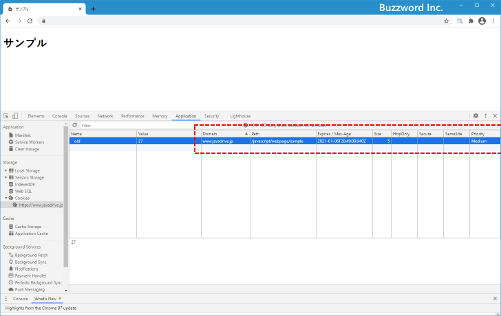
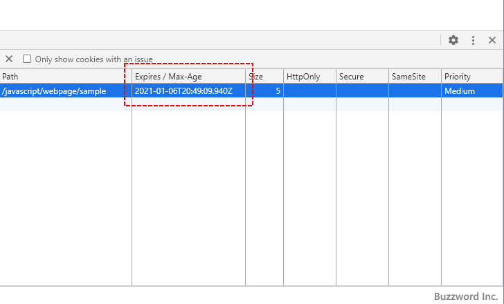
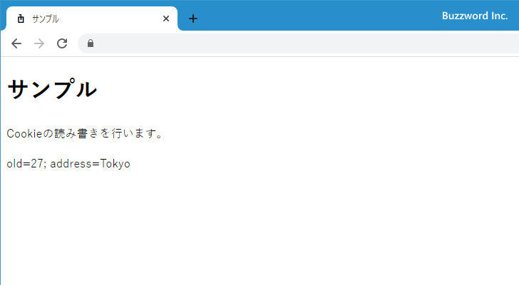
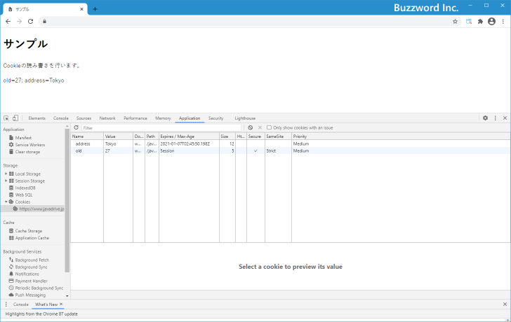
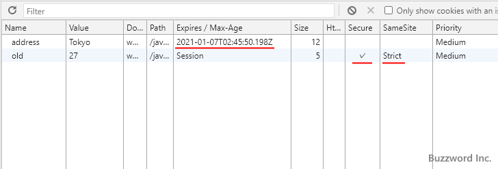
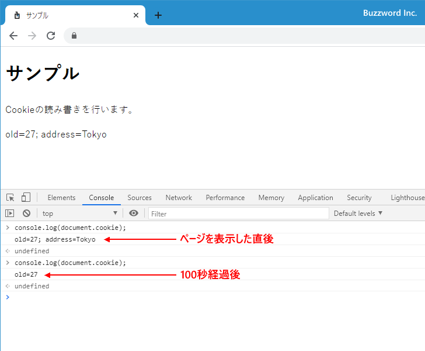

Cookieで指定可能な属性の種類と設定方法
Cookie に値を書き込むときは NAME=VALUE の値が必須ですが、 値を書き込むときに Cookie の有効期限や Cookie が送信されるドメインなど色々な属性を合わせて指定して書き込むことができます。ここでは Cookie で指定可能な属性の種類と使い方と JavaScript から設定を行う方法について解説します。
※ Cookie の読み書きを JavaScript を使って行う基本点な使い方については「Cookieへの書き込みと読み出し(document.cookie)」を参照されてください。
目次
Cookieの属性の種類と指定方法
Cookie に値を書き込むときに指定できる属性には次のようなものがあります。
Expires=DATE Cookieの有効期限(日付) Max-Age=DATE Cookieの有効期限(秒数) Domain=DAMAIN Cookieを送信するドメイン Path=PATH Cookieを送信するPATH Secure https の通信を使用しているときだけクッキーを送信 HttpOnly document.cookieを使ってCookieを扱えなくする SameSite=VAL 他サイト経由でリクエスト時にCookieを送信するかどうか
Cookie に値を書き込むとき、属性を指定する場合には次のようにセミコロン(;)のあとに 属性名=値 を記述します。複数の属性を指定することもできます。
document.cookie = 'NAME=VALUE; Max-Age=100; Domain=example.com'
なお document.cookie を使ってブラウザに保存された Cookie を取得しても、それぞれの値に設定された属性は取得することができません。例えば次のように Max-Age 属性をつけて値を書き込んでも、値を取得すると old=27 のみ取得します。
document.cookie = 'old=27; Max-Age=100;'; alert(document.cookie);
Cookie に保存された値の属性を確認したい場合は、ブラウザの機能を使って確認されてください。例えば Chrome の場合はデベロッパーツールから確認できます。(確認方法については「Chromeのデベロッパーツールで保存されているCookieを確認する」を参照されてください)。


それではそれぞれの属性について説明します。
Cookieの有効期限(Expires属性とMax-Age属性)
Cookie の有効期限は日付形式または秒数で指定します。指定しなかった場合の Cookie の有効期限はセッション終了までとなります。
日付の形式で指定する場合は Expires 属性に対して「Wdy, DD-Mon-YYYY HH:MM:SS GMT」の形式で指定します。例えば次のようになります。
document.cookie = 'A=B; Expires=Wed, 06 Jan 2021 08:11:26 GMT';
秒数で指定する場合は Max-Age 属性に対して有効な期間を表す秒数を指定します。例えば次のようになります。下記の場合は 100 秒となります。
document.cookie = 'A=B; Max-Age=100';
例えば有効期限を 100 秒に設定した場合、 Cookie に値を書き込んでから 100 秒経過すると自動的に Cookie から対象の値が削除されます。
Cookieを送信するドメイン(Domain属性)
ブラウザに保存された Cookie は、デフォルトでは Cookie を保存したページのホスト名と同じホスト名のページにアクセスした時にだけ Cookie を送信します。例えば www.example.com/dir/index.html にアクセスした時に保存された Cookie は、同じホストの www.example.com にあるページにアクセスした時に送信されます。 sub.www.example.com などサブドメインへは送信されません。
Domain 属性には Cookie を発行したホストか、その上位ドメインを設定できます。 Domain 属性を設定した場合、そのドメインおよびサブドメインを使ったホストに対して Cookie が送信されるようになります。例えば example.com を設定する場合は次のように記述します。
document.cookie = 'A=B; Domain=example.com';
この場合、 Cookie を発行したホストである www.example.com に加えて blog.example.com や host.example.com にあるページにアクセスした時にも Cookie を送信します。また sub.www.example.com にあるページにアクセスした時も Cookie を送信します。
なおまったく別のドメインを Domain 属性に指定した場合は、その値は Cookie に書き込まれません。
Cookieを送信するパス(Path属性)
ブラウザに保存された Cookie は、デフォルトでは Cookie を保存したページと同じパスのページにアクセスした時にだけ Cookie を送信します。例えば www.example.com/dir/index.html にアクセスした時に発行された Cookie は /dir/index と前方一致するパスのページにアクセスした時にだけ送信されます。
PATH 属性には Cookie を発行したときと同じパスかよりルートディレクトリに近いパスを設定できます。 Path 属性を設定した場合、指定したパスと前方一致するパスのページにアクセスした時に Cookie が送信されるようになります。例えば /dir を設定する場合は次のように記述します。
document.cookie = 'A=B; Path=/dir';
この場合、 /dir/index.html に加えて /dir/inde2.html や /directory など Path 属性に設置した値と前方一致するパスのページににアクセスした時に Cookie を送信します。
なおまったく別のパス(例えば /img )を Path 属性に指定した場合は、その値は Cookie に書き込まれません。
Secure属性とHttpOnly属性
Secure 属性を記述されている場合、 HTTPS の通信を行っている場合だけ Cookie の送信が行われます。 HTTP で通信を行っている場合は Cookie は送信されません。 Secure 属性を設定する場合は次のように単に Secure とだけ記述します。
document.cookie = 'A=B; Secure';
HttpOnly 属性を記述されている場合、 JavaScript の document.cookie では値を取得することができません。また document.cookie に対して HttpOnly 属性がついた値を Cookie に書き込むこともできません。 HttpOnly 属性を設定する場合は次のように単に HttpOnly とだけ記述します。
document.cookie = 'A=B; HttpOnly';
SameSite属性
SameSite 属性は、例えば A というサイトから B というサイトへリンクなどを経由して遷移するときに、ブラウザに保存されている B の Cookie を送信するかどうかのコントロールをおこなうための属性です。
設定可能な値は strict, lax, none のいずれかです。 strict を設定した場合は B の Cookie を送信しません。 lax の場合は GET や HEAD など安全なメソッドの場合だけ Cookie が送信され、 POST の場合には送信されません。 none の場合は制限なく B の Cookie を送信します。
SameSite 属性に strict を設定する場合は次のように記述します。
document.cookie = 'A=B; SameSite=strict';
Chrome では 2021年1月 の時点で SameSite 属性の設定が行われていない場合は lax が指定されたものとして扱われます。また none を指定する場合は、同時に Secure 属性を設定することが必須となっています。
document.cookie = 'A=B; SameSite=none; Secure';
SameSite 属性にいずれの設定を行った場合でも、ブラウザのアドレスバーに B のサイトの URL を直接入力して B のサイトへアクセスしたような場合には B の Cookie は送信されます。 SameSite 属性に strict または lax を設定することで CSRF (クロスサイト・リクエスト・フォージェリ) のようなセキュリティの問題を防止する効果があると言われています。
次のサンプルを見てください。
<!DOCTYPE html>
<html lang="ja">
<head>
<meta charset="UTF-8">
<title>サンプル</title>
</head>
<body>
<h1>サンプル</h1>
<p id="msg">Cookieの読み書きを行います。</p>
<script>
document.cookie = 'old=27; SameSite=strict; Secure';
document.cookie = 'address=Tokyo; Max-Age=100';
let e = document.getElementById('msg');
e.insertAdjacentHTML('afterend', '<p>' + document.cookie + '</p>');
</script>
</body>
</html>
ブラウザで Web ページを表示すると、先に Cookie を書き込んだあと、今度は保存されている Cookie を読み込んでブラウザに表示します。

Chrome のデベロッパーツールで Cookie 保存されている Cookie を確認してみると、保存されている name=old の値に対しては SameSite 属性と SameSite 属性が設定されており、 name=address の値に対しては Max-Age 属性が設定されていることが確認できます。


name=address の値は有効期限が 100 秒なので、 Cookie に値が保存されてから 100 秒経過したあとでコンソール画面で document.cookie を参照してみると name=address の値だけが消えていることが確認できます。

-- --
Cookie で指定可能な属性の種類と JavaScript から設定を行う方法について解説しました。
( Written by Tatsuo Ikura )

著者 / TATSUO IKURA
初心者～中級者の方を対象としたプログラミング方法や開発環境の構築の解説を行うサイトの運営を行っています。